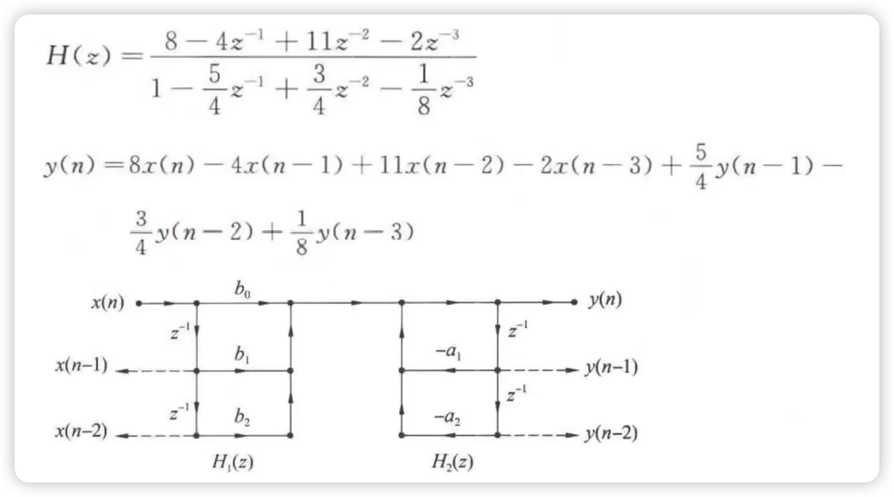
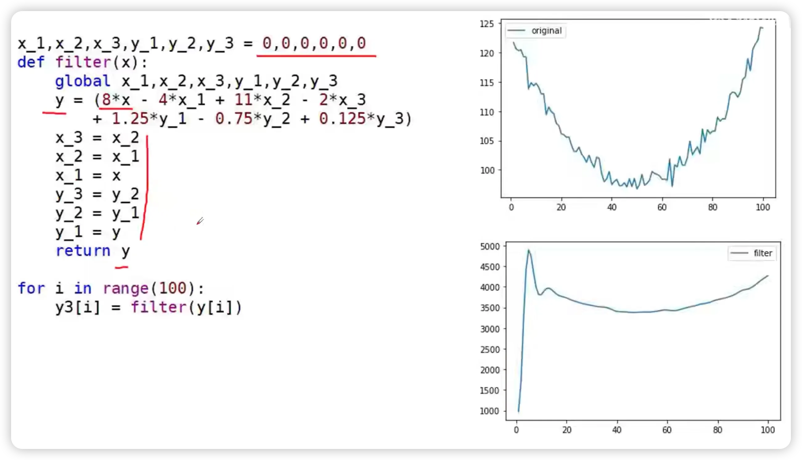
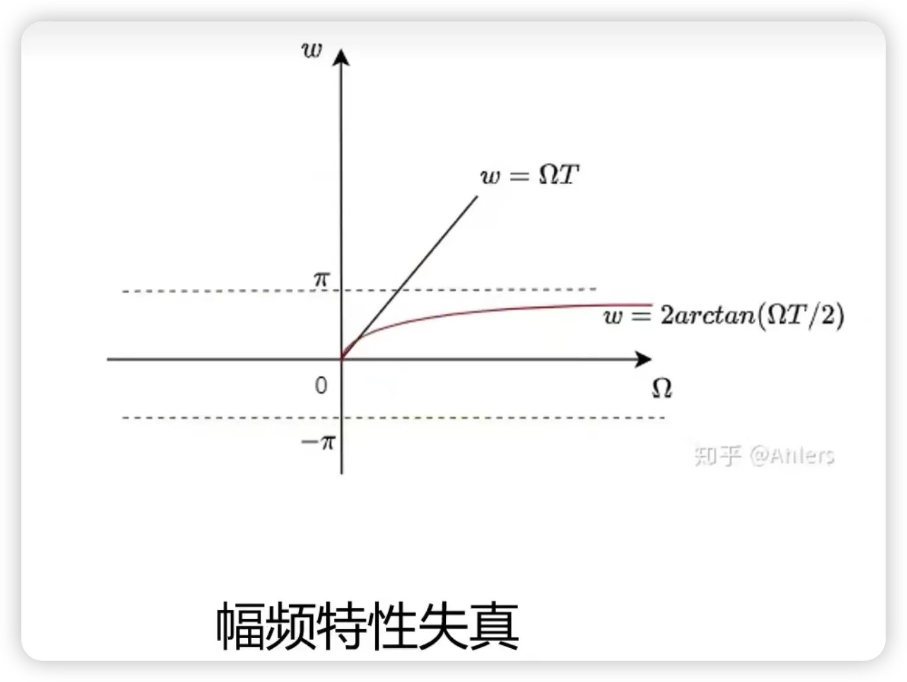
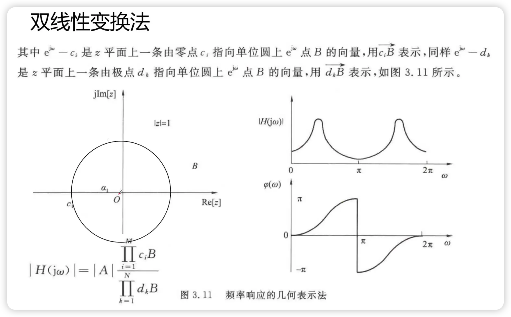

IIR 数字滤波器的设计
前置知识回顾
本节讨论"如何设计一个满足给定指标的数字滤波器"。读之前需要手边有：
- 模拟滤波器基础：知道幅度响应、截止频率、通带/阻带/过渡带的概念。
- 系统函数与零极点：会写 $H(s)$ 和 $H(z)$，理解稳定性与极点位置的关系。
- 滤波器结构：知道直接型、级联型、并联型的区别。可回看 数字滤波器基础与结构。
什么是模拟滤波器？什么是 IIR 数字滤波器？
模拟滤波器是直接处理连续时间信号的滤波器。它的输入、输出都是随时间连续变化的电压、电流或声学信号，通常用电阻、电容、电感、运算放大器等模拟电路实现。
从数学上看，模拟滤波器通常用拉普拉斯域系统函数 $H_a(s)$ 描述；从功能上看，它和数字滤波器一样，也是保留某些频率、压制另一些频率。例如低通模拟滤波器会让低频成分通过，衰减高频噪声。
IIR 数字滤波器则是处理离散时间序列 $x[n]$ 的数字系统，它的冲激响应理论上无限长，因此叫 Infinite Impulse Response。IIR 的系统函数一般写成
对应的差分方程含有输出反馈项：
也正因为有反馈，IIR 滤波器能用较低阶数实现陡峭的幅频特性，但必须检查极点是否在单位圆内，才能保证因果稳定。
| 对比项 | 模拟滤波器 | IIR 数字滤波器 |
|---|---|---|
| 处理对象 | 连续时间信号 $x_a(t)$ | 离散时间序列 $x[n]$ |
| 数学表示 | $H_a(s)$，定义在 $s$ 平面 | $H(z)$，定义在 $z$ 平面 |
| 实现方式 | 模拟电路，如 RC、RLC、运放电路 | 差分方程、程序或 DSP 芯片 |
| 稳定条件 | 因果系统极点在 $s$ 平面左半平面 | 因果系统极点在 $z$ 平面单位圆内 |
| 本章作用 | 作为 Butterworth、Chebyshev 等成熟原型 | 最终要实现的离散系统 |
为什么可以用模拟滤波器设计 IIR 数字滤波器？
关键原因是：模拟滤波器和 IIR 数字滤波器都可以用有理系统函数描述。模拟滤波器是 $H_a(s)$，IIR 数字滤波器是 $H(z)$；只要找到合适的映射，把 $s$ 平面的稳定区域、频率轴和系统函数关系转换到 $z$ 平面，就可以把成熟的模拟原型变成可实现的数字滤波器。
更具体地说，模拟设计已经解决了“怎样根据通带、阻带、波纹和衰减指标构造 Butterworth、Chebyshev、椭圆原型”的问题。IIR 设计借用这些原型，再处理两个转换问题：
- 频率指标转换：把数字频率 $\omega$ 和模拟频率 $\Omega$ 对齐，必要时做预畸变。
- 系统函数映射：把 $H_a(s)$ 变成 $H(z)$，同时尽量保持稳定性和目标幅频特性。
| 设计方法 | 核心思想 | 优点 | 主要限制 |
|---|---|---|---|
| 冲激响应不变法 | 令 $h[n]$ 对应 $h_a(t)$ 的采样 | 时域意义直观，频率关系局部线性 | 频谱周期复制会产生混叠 |
| 阶跃响应不变法 | 令阶跃响应 $g[n]$ 对应 $g_a(t)$ 的采样 | 保留阶跃响应采样点 | 仍然受混叠限制 |
| 双线性变换法 | 用 $s=\frac{2}{T}\frac{1-z^{-1}}{1+z^{-1}}$ 做一一映射 | 无混叠，稳定性保持 | 频率轴非线性压缩，需要预畸变 |
| 频率变换法 | 先设计低通原型，再变成高通、带通或带阻 | 复用低通设计公式 | 需要正确处理截止频率映射 |
数字滤波器的设计通常走一条"间接"路线：先在模拟域设计一个满足指标的原型滤波器，再通过某种变换把它映射到数字域。这是因为模拟滤波器（Butterworth、Chebyshev、椭圆）已有成熟的设计公式和表格，而数字域直接设计 IIR 滤波器则困难得多。第六讲的主线正是：先明确数字滤波器的技术指标，再学习三类模拟原型，最后用冲激响应不变法、阶跃响应不变法、双线性变换和频率变换得到目标数字滤波器。
数字滤波器如何分类？
从设计思想看，数字滤波器可以粗略分成两大类：
| 类别 | 核心问题 | 典型代表 | 本节关系 |
|---|---|---|---|
| 经典滤波器 | 按频率选择信号成分 | 低通、高通、带通、带阻、全通 | 本节重点讨论的选频 IIR 滤波器 |
| 现代滤波器 | 按统计模型、状态估计或在线学习改善信号 | 维纳滤波、卡尔曼滤波、自适应滤波 | 通常不只看固定幅频指标 |
如果按功能分类，经典选频滤波器又可以分为低通、高通、带通、带阻和全通。前四类主要规定“哪些频率通过、哪些频率被压制”；全通的幅度响应恒为 1，主要用来调整相位。
数字滤波器的分类可以从两条线理解：一条是经典滤波器与现代滤波器的区分，另一条是经典选频滤波器内部按功能分成低通、高通、带通、带阻和全通。前者回答“滤波问题的建模方式是什么”，后者回答“频率轴上要保留或压制哪些成分”。
因此，本讲的 IIR 设计主要处理经典选频滤波器，而不是维纳、卡尔曼或自适应滤波这类现代滤波问题。
什么是选频滤波器？
选频滤波器是一类按频率选择信号成分的滤波器：它让指定频带内的频率成分尽量通过，同时把其他频带内的频率成分尽量衰减。低通、高通、带通、带阻都属于选频滤波器；全通滤波器虽然幅度恒为 1，但也常放在滤波器分类中，用来改变相位而不改变幅度。
因此，选频滤波器设计的核心不是“让所有频率都好看”，而是把频率轴划分成通带、阻带和过渡带，再用容限规定每一段允许的误差。
选频数字滤波器的技术指标
选频滤波器的频率响应可写成
这里 $|H(e^{j\omega})|$ 是幅度响应，也叫幅频特性，表示输入中频率为 $\omega$ 的正弦或复指数分量通过滤波器后会被放大或衰减多少倍。例如低通滤波器希望低频处 $|H(e^{j\omega})|\approx 1$，高频处 $|H(e^{j\omega})|\approx 0$。$\phi(\omega)$ 是相位响应，反映各频率成分通过滤波器后的相位移动或时间延迟。工程指标通常用通带截止频率、阻带截止频率、通带容限和阻带容限来规定滤波器。
频率响应、幅频特性和相频特性应当放在一起理解：$H(e^{j\omega})$ 是“每个频率分量通过系统后的复数增益”，模长对应幅度变化，辐角对应相位移动。
因此，后面讲通带、阻带和滤波器指标时，默认关注的是幅度响应；而最小相位系统、全通系统和相位均衡，则是在讨论相位响应。
| 符号 | 含义 | 在设计中的作用 |
|---|---|---|
| $\omega_p$ / $\Omega_p$ | 通带截止频率 | 规定应该尽量通过的频率边界 |
| $\omega_s$ / $\Omega_s$ | 阻带截止频率 | 规定必须充分衰减的频率边界 |
| $\delta_1$ 或 $\alpha_p$ | 通带容限 / 通带最大衰减 | 控制通带内允许的波纹或衰减 |
| $\delta_2$ 或 $\alpha_s$ | 阻带容限 / 阻带最小衰减 | 控制阻带中残留频率成分的上限 |
通带、过渡带和阻带是在频率轴上划出的三个区域。通带不是“完全等于 1”，阻带也不是“完全等于 0”，二者都允许一定误差；过渡带则是不强行规定指标的连接区域。
这正是上表里 $\omega_p$、$\omega_s$、$\delta_1$、$\delta_2$ 的作用：它们把“想要一个低通/高通”变成可计算的设计约束。
IIR vs FIR 设计对比
| 特性 | IIR | FIR |
|---|---|---|
| 阶数 | 低（同样指标） | 高（通常 5~10 倍） |
| 相位 | 非线性 | 可严格线性 |
| 稳定性 | 需检验极点 | 总是稳定 |
| 设计方法 | 模拟原型 + 变换 | 窗函数 / 频率抽样 / 优化 |
| 典型应用 | 音频均衡、通信信道 | 线性相位系统、图像处理 |
flowchart LR
A["数字滤波器指标"] --> B["模拟低通原型"]
B --> C{"目标类型"}
C -->|"低通"| D["模拟到数字映射"]
C -->|"高通 / 带通 / 带阻"| E["频率变换"]
E --> D
D --> F["数字系统函数 H(z)"]
F --> G["结构实现与指标验证"]
频率选择滤波器首先看幅度响应，但系统函数的零点位置还会决定相位延时或相位超前。若两个系统有相同的幅度响应，它们的零点可以关于单位圆成镜像关系；零点放在单位圆内还是单位圆外，会改变相位，却不改变幅度包络。这就是最小相位、最大相位以及相位超前/延时系统要解决的问题。
因果稳定系统与逆因果稳定系统
对有理系统函数 $H(z)$，若系统因果稳定，则它的收敛域在最外极点之外并包含单位圆；等价地，所有极点都在单位圆内。若系统的逆系统 $1/H(z)$ 也要因果稳定，则 $1/H(z)$ 的极点，也就是 $H(z)$ 的零点，也必须在单位圆内。
| 系统 | 稳定要求 | 对零极点的含义 |
|---|---|---|
| 因果稳定系统 $H(z)$ | 极点在单位圆内 | 输出不会因反馈发散 |
| 逆因果稳定系统 $1/H(z)$ | $H(z)$ 的零点也在单位圆内 | 可以稳定地反滤波或均衡 |
| 非最小相位系统 | 极点可稳定，但存在单位圆外零点 | 原系统稳定，逆系统会不稳定 |
四类相位系统怎么区分？
在具有相同幅度响应的系统族中，零点相对单位圆的位置决定相位延时或相位超前的极端情况：
| 名称 | 零点位置 | 相位特征 | 直观理解 |
|---|---|---|---|
| 最小相位延时系统 | 全部零点在单位圆内 | 相位延时最小 | 在同幅度响应系统中“最靠前” |
| 最大相位延时系统 | 零点尽量镜像到单位圆外 | 相位延时最大 | 同幅度响应下延时最重 |
| 最小相位超前系统 | 按逆系统或反向时间系统讨论 | 相位超前最小 | 超前效果最弱 |
| 最大相位超前系统 | 与最大延时情形互为反向视角 | 相位超前最大 | 超前效果最强 |
课程里最常用的是最小相位延时系统：它同时要求因果稳定和逆因果稳定，因此所有零点、极点都在单位圆内。
2.1 最小相位延时系统的性质
因果稳定的 LTI 系统，若所有零点和极点都在单位圆内，则称为最小相位延时系统，通常也简称最小相位系统。它的特点是：
- 幅频响应相同时，相移最小。
- 能量集中在最前面（最小能量延迟）。
- 逆系统也是因果稳定的（所有零极点在单位圆内）。
最小相位系统的核心是零点位置：零点在单位圆内外移动时，系统相位延时会改变；把零点镜像到单位圆内，可以在保持幅度响应的同时降低相位延时。
因此本节的主线是：因果稳定看极点，逆因果稳定看零点；最小相位延时系统则同时把极点和零点都约束在单位圆内。
3.1 全通系统的定义
全通系统的幅度响应恒为 1，即 $|H(e^{j\omega})|=1$ 对所有 $\omega$ 成立。
一阶全通系统函数
零点在 $z=1/a$（单位圆外），极点在 $z=a$（单位圆内），两者关于单位圆呈镜像共轭关系。一般地，若 $z_0$ 是零点，则 $1/z_0^*$ 是极点。
为什么它的幅度响应恒为 1？
在单位圆上令 $z=e^{j\omega}$，则
若 $a$ 为实数，则分子模长的平方为
分母模长的平方为
两者相等，因此
对于实系数全通系统，高阶形式为
全通系统的核心应用：
- 相位均衡：级联全通系统可以调整相位响应而不改变幅度。
- 稳定性补偿：一个不稳定的因果系统可以通过级联全通系统，将单位圆外的极点"镜像"回单位圆内，变成稳定的因果系统。
- 最小相位分解：任何因果稳定系统可以分解为最小相位系统与全通系统的级联。
全通系统需要抓住三件事：第一，幅度响应恒为 1；第二，一阶实系数全通系统的零点和极点以单位圆为镜像；第三，复系数情形要成共轭对出现，才能得到实系数系统。
全通系统的应用可以按两条线理解：一是利用全通系统做相位均衡，在不改变幅度响应的前提下修正相位；二是利用零极点镜像关系，把单位圆外的零点或极点搬回单位圆内，从而得到稳定、可逆或最小相位的等幅系统。
所以，全通系统不是为了改变选频幅度，而是在保持幅度不变的前提下重排相位与零极点位置，并把这种性质用于相位均衡、稳定补偿和最小相位分解。
前两节我们讨论了 IIR 的相位性质和全通系统,但还没回答一个工程问题：拿到一个 $H(z)$ 后,如何把它画成信号流图,再落地成差分方程、Python 代码或硬件乘法器?这一节补上这一步。结构选择之所以重要,是因为它直接影响存储开销、系数量化敏感度和内部状态动态范围——拿到同一个 $H(z)$ 后,选择直接型、级联型还是并联型,得到的实现是截然不同的。
4.1 IIR 递归结构的特点
IIR(Infinite Impulse Response)滤波器的特点是：单位冲激响应 $h(n)$ 无限长;$H(z)$ 在有限 $z$ 平面上有极点;结构上存在输出到输入的反馈,是递归型的。
递归结构带来两个直接后果。第一,IIR 可以用较低阶数得到很陡的过渡带,因此同样指标下通常比 FIR 更省乘法器;第二,极点位置决定稳定性,只要极点受量化影响跑到单位圆外,系统就会失稳。所以 IIR 结构设计最关心的是极点控制、系数量化敏感度和内部状态动态范围。
4.2 为什么同一个 IIR 要有多种结构
一个系统函数 $H(z)$ 只规定了输入和输出之间的关系,并没有规定中间变量怎么存、乘法器怎么排、反馈支路怎么组织。直接 I 型、直接 II 型、级联型、并联型本质上是同一个 $H(z)$ 的不同"施工方案"。
四种 IIR 结构分别解决什么问题
| 结构 | 它从什么想法出发 | 主要解决的问题 | 什么时候用 |
|---|---|---|---|
| 直接 I 型 | 按差分方程原样连接 | 让公式和结构一一对应,便于学习和手算 | 低阶例题、概念说明、原型验证 |
| 直接 II 型 | 把零点网络和极点网络的延迟链合并 | 减少存储单元,得到最少延迟结构 | 存储紧张、阶数较低、浮点实现 |
| 级联型 | 把高阶系统拆成多个一阶/二阶节串联 | 降低系数量化敏感度,局部控制零极点 | 实际 IIR 实现最常用,尤其是 Biquad 级联 |
| 并联型 | 把系统拆成多个一阶/二阶支路相加 | 缩短误差传播路径,提高并行计算能力 | 并行硬件、模态分析、部分分式形式自然的系统 |
graph TD
A["拿到同一个 H(z)"] --> B{"目标是什么?"}
B -->|"先看懂公式怎么实现"| C["直接 I 型"]
B -->|"尽量少用延迟/存储"| D["直接 II 型"]
B -->|"高阶 IIR 要稳定可靠"| E["级联型二阶节"]
B -->|"硬件能并行、多支路同时算"| F["并联型"]
C --> G["学习、手算、低阶原型"]
D --> H["存储省,但内部状态动态范围要小心"]
E --> I["工程最常用:逐节控制零极点"]
F --> J["误差不串行传递,适合并行架构"]
4.3 直接 I 型
按差分方程直接画出：先实现零点网络($M$ 个延迟+加权,对 $x$ 的横向抽头),再实现极点网络($N$ 个延迟+加权,对 $y$ 的反馈)。
直接 I 型结构
零点网络：$M$ 个延迟单元,$M+1$ 个乘法器。
极点网络：$N$ 个延迟单元,$N$ 个乘法器($a_0=1$ 不需乘)。
总延迟单元数：$M+N$。
直接 I 型与系统函数公式的对应关系：分子多项式对应输入抽头网络,分母多项式对应输出反馈网络。因此直接 I 型不是凭空画出来的,而是把 $H(z)$ 的分子、分母分别按 $z^{-1}$ 延迟链展开。
直接 I 型的直观好处是"零点在前、极点在后",与差分方程一一对应,容易手画。缺点是延迟单元多,系数 $a_k,b_k$ 对极点/零点的控制不直观,且极点对系数变化非常敏感,容易出现不稳定或较大误差。
4.4 直接 II 型(正准型)
直接 I 型的零点网络和极点网络是级联的,可以把它们交换顺序。交换后,两个网络中间的延迟单元完全重合,合并后只需 $\max(M,N)$ 个延迟单元。直接 II 型可以理解成一条共享的状态链：先由反馈系数 $a_k$ 递推得到中间状态 $x'(n)$,再由前向系数 $b_k$ 从这些状态合成输出 $y(n)$。
因此直接 II 型的核心不是"换一种画法",而是把原本分别服务于分子和分母的两组延迟记忆合并为同一组内部状态。若 $M=N$,直接 I 型需要 $2N$ 个延迟单元,直接 II 型只需要 $N$ 个;若 $M\ne N$,则需要 $\max(M,N)$ 个。它很省存储,所以也叫正准型(canonical form)。
直接 II 型(正准型 / Canonical Form)
把 $H(z)=H_1(z)\cdot H_2(z)$ 中 $H_1$(极点)和 $H_2$(零点)交换顺序,合并共用延迟链。
总延迟单元数：$\max(M,N)$(最少可能)。
总乘法器数：$M+N+1$(与直接 I 型相同)。
4.5 级联型
先把 $H(z)$ 的分子分母分别因式分解为零点和极点:
其中 $g_k$ 为实零点,$h_k$ 为复零点,$c_k$ 为实极点,$d_k$ 为复极点;$M=M_1+2M_2$,$N=N_1+2N_2$。再把共轭对组合成实系数二阶因子:
级联型的信号流图法：每个一阶或二阶小节先单独画成信号流图,再按系统函数乘积的顺序首尾相接。这样读图时不需要一次面对完整高阶多项式,而是逐节检查每个子系统的零点、极点和延迟链。
级联型最关键的工程理解：当 $M=N=4$ 时,系统可拆成 2 个二阶节;当 $M=N=6$ 时,可拆成 3 个二阶节。每一节都有自己的 $\beta_{1k},\beta_{2k}$ 与 $\alpha_{1k},\alpha_{2k}$,所以调节第 $k$ 节时,主要影响第 $k$ 对零点和第 $k$ 对极点,而不是一次牵动整个高阶多项式。
级联型把高阶滤波器拆成若干个一阶/二阶小系统串联。每个二阶节(Biquad)只用 2 个延迟单元,负责一对共轭零点和一对共轭极点;整体 $H(z)$ 等于各节系统函数的乘积。这样:
- $\beta_{1k},\beta_{2k}$ 主要决定第 $k$ 节的零点位置,常用来塑造通带、阻带或陷波位置。
- $\alpha_{1k},\alpha_{2k}$ 决定第 $k$ 节的极点位置,直接影响峰值、带宽和稳定性。
- 每节只处理低阶多项式,系数量化误差不会一次性作用在高阶多项式上,数值灵敏度通常低于直接型。
- 实际实现时还可以调整二阶节顺序和每节增益分配,避免某一节内部信号过大而溢出。
4.6 并联型
把 $H(z)$ 做部分分式展开:
并联型的具体演示：先把系统函数展开成若干个简单支路,每条支路独立实现一个一阶或二阶子系统,最后在输出端求和。这个例子适合对照部分分式展开步骤,理解"相加的系统函数"如何变成"并行的结构图"。
并联型通过部分分式展开得到：把一个高阶有理函数拆成若干个一阶/二阶子系统的和。输入 $x(n)$ 同时送入所有支路,各支路分别产生一个分量响应,最后把这些输出相加得到 $y(n)$。
当 $M<N$ 时不含 $G_k$ 项;当 $M\ge N$ 时需要先做长除法,前面的 $G_k z^{-k}$ 是直接前馈项;当 $N$ 为奇数时通常会有一个一阶节。并联型的特点是:
- 各并联支路互相独立,某一支路的舍入误差不会继续传入下一节,误差传播路径短。
- 多个支路可以同时计算,再在末端相加,适合 FPGA、SIMD 或多乘法器 DSP 这类并行硬件。
- 每个分母因子对应一组极点,所以可以较清楚地观察每组极点贡献的模态响应。
- 零点不是由某个单独支路直接控制,而是所有支路相加后整体形成,因此不如级联型那样便于单独调整零点。
4.8 转置定理
转置定理(Transposition Theorem)
将网络中所有支路方向反转,输入输出交换位置,系统函数 $H(z)$ 不变。转置后的直接 I 型等价于直接 II 型的"转置型",延迟单元数不变。
| 结构 | 延迟单元 | 核心优点 | 核心缺点 |
|---|---|---|---|
| 直接 I 型 | $M+N$ | 直观,与差分方程对应 | 延迟多,系数敏感 |
| 直接 II 型 | $\max(M,N)$ | 最少延迟,正准型 | 系数仍敏感 |
| 级联型 | $N$ | 零极点独立可调 | 需因式分解 |
| 并联型 | 较多 | 误差最小,可并行 | 不能调零点 |
至此,IIR 的两类底层性质——相位(第二章)和全通(第三章)——以及"给定 $H(z)$ 怎么实现成电路/代码"都已交代清楚。接下来的问题变成:已知滤波指标,如何反推出一个满足要求的 $H(z)$?这正是后面第五章 IIR 设计方法的主题。
例题:三阶 IIR 直接 II 型实现
给定系统函数：
对应的差分方程：
分析系数:从 $H(z)$ 读出前向系数 $b_k=\{8,-4,11,-2\}$,反馈系数 $a_k=\{-\frac{5}{4},\frac{3}{4},-\frac{1}{8}\}$(注意符号:差分方程中反馈项系数是分母系数的相反数)。
直接 II 型实现:将 $H(z)$ 拆成 $H_1(z)\cdot H_2(z)$,其中 $H_1(z)$ 实现零点(前向支路),$H_2(z)$ 实现极点(反馈支路)。两者共享同一条延时链,只需 $\max(3,3)=3$ 个 $z^{-1}$ 延时单元：
- 反馈部分 $H_2(z)$:中间状态 $w(n)$ 由输入和反馈递推:
$$w(n)=x(n)+\tfrac{5}{4}w(n-1)-\tfrac{3}{4}w(n-2)+\tfrac{1}{8}w(n-3)$$
三个延时器分别存储 $w(n-1),w(n-2),w(n-3)$。
- 前向部分 $H_1(z)$:输出 $y(n)$ 从共享状态链抽头加权求和:
$$y(n)=8w(n)-4w(n-1)+11w(n-2)-2w(n-3)$$
| 参数 | 值 | 含义 |
|---|---|---|
| 阶数 $N$ | 3 | 分子分母均为三次 |
| 前向系数 $b_k$ | $\{8,-4,11,-2\}$ | 零点位置 |
| 反馈系数 $-a_k$ | $\{\frac{5}{4},-\frac{3}{4},\frac{1}{8}\}$ | 极点位置(符号取反) |
| 延时单元 | 3 个 $z^{-1}$ | 直接 II 型正准型,$\max(M,N)=3$ |
| 乘法器 | $4+3=7$ 个 | $b_0$ 至 $b_3$ 加 $-a_1$ 至 $-a_3$ |

如上图所示,$H_1(z)$(零点部分)在左侧：输入 $x(n)$ 从左进入,经反馈递推得到中间状态,再通过 $b_0,b_1,b_2,b_3$ 四条前向支路加权求和输出 $y(n)$。$H_2(z)$(极点部分)在右侧：输出端的 $y(n)$ 经 $z^{-1}$ 延时后分别乘 $-a_1,-a_2$ 反馈回加法节点。两条链共享同一组延时器,这就是直接 II 型比直接 I 型节省存储的核心。
Python 实现与仿真结果
用 Python 直接实现上述差分方程,对 100 个采样点的输入信号进行滤波:
x_1, x_2, x_3, y_1, y_2, y_3 = 0, 0, 0, 0, 0, 0
def filter(x):
global x_1, x_2, x_3, y_1, y_2, y_3
y = (8*x - 4*x_1 + 11*x_2 - 2*x_3
+ 1.25*y_1 - 0.75*y_2 + 0.125*y_3)
x_3 = x_2; x_2 = x_1; x_1 = x
y_3 = y_2; y_2 = y_1; y_1 = y
return y
for i in range(100):
y3[i] = filter(y[i])
从仿真结果可以观察到两个典型现象:
- 初始瞬态过冲:输出在 $n\approx 5$ 处飙升至 ~4900,远超输入信号的幅值范围(95~125)。这是因为滤波器启动时所有状态变量初始化为零(零初始条件),前几个采样点的反馈还未建立,前向系数 $b_0=8$ 的放大效应直接作用在输入上。
- 持续振铃:过冲之后输出并未迅速收敛,而是在 3500~4500 之间缓慢振荡。这说明分母的极点虽然最终使系统稳定(极点在单位圆内),但靠近单位圆的极点导致了缓慢衰减的振铃。输出量级(~1000~5000)比输入(~100)放大了约一个数量级,对应前向增益 $\sum|b_k|=8+4+11+2=25$ 的累积效果。
例题:用四种结构实现给定 IIR 滤波器
题目:设 IIR 数字滤波器差分方程为
试用直接 I 型、直接 II 型、级联型、并联型四种结构实现。
解:
步骤 1:写系统函数
步骤 2:直接 I 型
直接 I 型按原差分方程拆成两条延迟链:一条输入抽头链计算 $x(n)$ 与 $x(n-1)$ 的前向部分,另一条输出反馈链计算 $y(n-1)$ 与 $y(n-2)$ 的反馈部分。这个例子中分子一阶、分母二阶,因此需要 $1+2=3$ 个延迟单元。
| 链路 | 需要保存的状态 | 参与求和的项 | 延迟单元数 |
|---|---|---|---|
| 输入抽头链 | $x(n-1)$ | $x(n)$、$\tfrac{1}{4}x(n-1)$ | 1 |
| 输出反馈链 | $y(n-1), y(n-2)$ | $\tfrac{5}{4}y(n-1)$、$-\tfrac{3}{8}y(n-2)$ | 2 |
直接 I 型的实现顺序可以写成:先从输入链得到 $x(n)$ 与 $x(n-1)$ 的加权和,再从输出历史中取出两项反馈量,最后把四项相加得到 $y(n)$。它的优点是结构直观,缺点是延迟单元没有共享。
步骤 3:直接 II 型
直接 II 型把分母递归部分和分子前向部分串接,并把两条延迟链合并为一条内部状态链。令内部状态为 $w(n)$:
| 状态 | 含义 | 进入递归部分的系数 | 进入输出部分的系数 |
|---|---|---|---|
| $w(n)$ | 当前内部状态 | 主通路系数 1 | 主通路系数 1 |
| $w(n-1)$ | 一次延迟状态 | $\tfrac{5}{4}$ | $\tfrac{1}{4}$ |
| $w(n-2)$ | 二次延迟状态 | $-\tfrac{3}{8}$ | 0 |
直接 II 型只需要 2 个延迟单元。读它时不要再把输入延迟链和输出反馈链分开,而是盯住同一串状态 $w(n),w(n-1),w(n-2)$:递归方程负责生成 $w(n)$,输出方程负责从这些状态抽头得到 $y(n)$。
步骤 4:级联型
因式分解:分子 $1+z^{-1}/4=(1+0.25z^{-1})$,分母 $1-1.25z^{-1}+0.375z^{-2}=(1-0.75z^{-1})(1-0.5z^{-1})$。
| 级联节 | 系统函数 | 递推关系 | 控制的零极点 |
|---|---|---|---|
| 第 1 节 | $H_1(z)=\dfrac{1+0.25z^{-1}}{1-0.75z^{-1}}$ | $v(n)=u(n)+0.25u(n-1)+0.75v(n-1)$ | 零点 $-0.25$,极点 $0.75$ |
| 第 2 节 | $H_2(z)=\dfrac{1}{1-0.5z^{-1}}$ | $y(n)=v(n)+0.5y(n-1)$ | 极点 $0.5$ |
级联型不强调"按原公式一口气算完",而是把系统拆成两个小滤波器串起来:$x(n)\to H_1(z)\to v(n)\to H_2(z)\to y(n)$。每个小节只控制一部分零极点,调试和定点实现都更稳。
步骤 5:并联型
部分分式展开:
解得 $A=4,B=-3$。两支路并联,输入同时进入两个一阶节,输出相加:
| 并联支路 | 系统函数 | 递推关系 | 输出合成 |
|---|---|---|---|
| 上支路 | $H_a(z)=\dfrac{4}{1-0.75z^{-1}}$ | $y_a(n)=4x(n)+0.75y_a(n-1)$ | $y(n)=y_a(n)+y_b(n)$ |
| 下支路 | $H_b(z)=\dfrac{-3}{1-0.5z^{-1}}$ | $y_b(n)=-3x(n)+0.5y_b(n-1)$ |
并联型的每条支路独立计算一个一阶系统的响应,最后相加。它牺牲了"零点单独可调"的直观性,但支路可以并行运行,误差也不会像级联那样从前一节继续传到后一节。
这一节回答“为什么可以用模拟滤波器设计 IIR 数字滤波器，以及具体怎么做”。核心路线是：先根据数字指标换算出模拟指标，设计模拟低通原型 $H_a(s)$，再用冲激响应不变法、阶跃响应不变法或双线性变换得到数字系统函数 $H(z)$。
有了模拟原型 $H_a(s)$，需要把它变成数字滤波器 $H(z)$。第六讲依次给出三条路线：冲激响应不变法保持冲激响应采样点，阶跃响应不变法保持阶跃响应采样点，双线性变换则用一一映射避免频谱混叠。
5.1 冲激响应不变法（Impulse Invariance）
冲激响应不变法的目标很直接：让数字滤波器在采样时刻的冲激响应，尽量复现模拟滤波器的冲激响应。也就是说，先在模拟域设计 $H_a(s)$，再把 $h_a(t)$ 在 $t=nT$ 处采样，得到数字滤波器的 $h(n)$。
冲激响应不变法
令数字滤波器的单位冲激响应等于模拟滤波器冲激响应的采样：
其中 $T$ 为采样周期。于是
如果模拟系统中有一个极点 $s_k$，采样后对应的数字极点为
这就是冲激响应不变法最重要的极点映射关系。若 $s_k=\sigma_k+j\Omega_k$，则 $z_k=e^{\sigma_kT}e^{j\Omega_kT}$：模拟极点的实部决定数字极点半径，虚部决定数字极点角频率。
若 $H_a(s)$ 只有单极点，部分分式展开为
对应的模拟冲激响应为 $h_a(t)=\sum_{k=1}^{N}A_k e^{s_kt}u(t)$。采样后
再做 $z$ 变换，得到
插一句：数字频率 $\omega$ 是什么，$\omega=2\pi f_c/f_s$ 从哪来
设计指标里反复出现的 $\omega$（如 $\omega_p=0.2\pi$）叫数字频率，它和模拟频率 $f_c$（Hz）、$\Omega=2\pi f_c$（rad/s）不是一回事。它由“采样”这个动作推出来：频率为 $f_c$ 的模拟正弦 $\cos(2\pi f_c t)$ 以采样率 $f_s$（采样周期 $T=1/f_s$）采样，得到序列
对照 $\cos(\omega n)$ 即得
所以本质就是 $\omega=\Omega T$——模拟角频率乘采样周期。它有三个要点：（1）单位是 rad/sample（每个采样点转过的相位弧度），是个相对采样率的无量纲量；（2）因为 $n$ 是整数，$\omega$ 加 $2\pi$ 整数倍序列不变，故以 $2\pi$ 为周期，有效范围只看 $[0,\pi]$；（3）最高频是 $\omega=\pi$，对应 $f_c=f_s/2$（奈奎斯特频率）——这也是后面所有幅频响应图横轴画到 $\pi$（或 $\omega/\pi$ 到 1.0）就停的原因。直观读法：“信号频率占采样率的几分之几，再乘 $2\pi$”，例如 $f_c=1$ kHz、$f_s=10$ kHz 时 $\omega_c=0.2\pi$，正是下文例题里 $\omega_p=0.2\pi$ 的来历。
设计步骤
- 根据数字指标确定采样周期 $T$，并把数字频率换算为模拟频率：$\Omega=\omega/T$。
- 设计满足模拟指标的模拟原型 $H_a(s)$。
- 把 $H_a(s)$ 做部分分式展开，写成若干一阶项或二阶共轭项。
- 用 $z_k=e^{s_kT}$ 把每个模拟极点映射到数字极点。
- 按 $H(z)=\sum_k \frac{T A_k}{1-e^{s_kT}z^{-1}}$ 合成数字系统函数。
冲激响应不变法的频域关系
只有当 $H_a(j\Omega)$ 严格带限于 $|\Omega|<\pi/T$ 时，$k\ne 0$ 的项为零，才不发生混叠。实际中低通滤波器在阻带仍有残余，因此总有轻微混叠。
因此冲激响应不变法适合低通、窄带带通这类模拟频谱主要集中在低频或有限频带内的场景；不适合高通和带阻，因为高频部分会被周期复制并折叠进低频，造成严重混叠。
| 维度 | 冲激响应不变法的表现 |
|---|---|
| 时域 | 保持采样点处的冲激响应形状 |
| 频率映射 | $\omega=\Omega T$，频率关系线性 |
| 稳定性 | $s$ 左半平面映射到 $z$ 单位圆内，稳定性保持 |
| 主要缺点 | 频谱周期复制导致混叠 |
| 适用滤波器 | 低通、窄带带通 |
| 不适用滤波器 | 高通、带阻、频谱不带限的模拟原型 |
冲激响应不变法的频率映射关系要抓住一个矛盾：$\\Omega$ 到 $\\omega$ 的关系局部是线性的，但数字频率以 $2\pi$ 为周期，模拟频谱会被周期复制，这正是混叠来源。
所以这一路线的优点是时域直观、频率轴低频段容易理解；缺点是不能干净处理高通和带阻。课件用一个完整算例验证了这一点：图 6-24 给出用冲激响应不变法设计出的六阶 Butterworth 低通数字滤波器的频率响应，分幅度、增益（dB）、相位三幅图（横轴 $\omega$ 从 0 到 $\pi$）。可以看到通带在 $0.2\pi$ 附近平坦下降、阻带衰减单调加深，正是 Butterworth“通带最平坦”的特征；同时高频段并未抬起，说明此例频谱基本带限、混叠不严重——这页是把“冲激响应不变法 + Butterworth 原型”落到实际设计效果上不可或缺的一页。
5.2 阶跃响应不变法（Step Invariance）
冲激响应不变法是让 $h(n)$ 模仿 $h_a(t)$ 的采样。第六讲还给出一种平行思路：让数字系统的阶跃响应模仿模拟系统阶跃响应的采样。它适合从"系统对阶跃输入的累积响应"角度理解模拟到数字的映射。
阶跃响应不变法的构造
设模拟滤波器冲激响应为 $h_a(t)$，阶跃响应为
数字滤波器中，阶跃输入的 $z$ 变换为 $z/(z-1)$，若 $g(n)=u(n)*h(n)$，则
因此设计流程是：先由 $H_a(s)$ 得到 $G_a(s)$，反拉普拉斯变换得到 $g_a(t)$，采样成 $g(n)=g_a(nT)$，再做 $z$ 变换得到 $G(z)$，最后由 $H(z)=\frac{z-1}{z}G(z)$ 求数字滤波器。
阶跃响应不变法的完整关系是：先从 $H_a(s)$ 得到 $G_a(s)$，再由采样后的 $G(z)$ 回到 $H(z)$。它比冲激响应不变法多了一个“先除以 $s$ 得到阶跃响应、最后再乘回 $(z-1)/z$”的步骤。
这样放置后，阶跃响应不变法的角色就很清楚：它仍是时域采样思想，只是采样对象从冲激响应换成了阶跃响应。
5.3 双线性变换法（Bilinear Transform）
双线性变换
用以下保角映射把 $s$ 平面左半平面一对一映射到 $z$ 平面单位圆内部：
双线性变换的核心特性：
- 无混叠：$s$ 平面整个 $j\Omega$ 轴一对一映射到 $z$ 平面单位圆，没有频率重叠。
- 频率畸变：模拟频率与数字频率的关系是非线性的：
$$\Omega=\frac{2}{T}\tan\frac{\omega}{2},\qquad \omega=2\arctan\frac{\Omega T}{2}.$$
- 稳定性保持：$s$ 左半平面 $\to$ $z$ 单位圆内部，因果稳定的模拟滤波器一定映射为因果稳定的数字滤波器。
5.4 预畸变（Pre-warping）
由于双线性变换的频率畸变，若要求数字滤波器在 $\omega_c$ 处有截止频率，需要先把模拟原型的截止频率"预畸变"为
然后用 $\Omega_c$ 设计模拟滤波器，再做双线性变换，最终数字滤波器的截止频率就恰好落在 $\omega_c$。
| 方法 | 优点 | 缺点 | 适用 |
|---|---|---|---|
| 冲激响应不变 | 线性频率关系 | 混叠 | 低通/带通（带限） |
| 阶跃响应不变 | 保持阶跃响应采样点 | 混叠 | 低通/带通（带限） |
| 双线性变换 | 无混叠，稳定保持 | 频率畸变 | 通用（需预畸变） |
双线性变换的关键优点是一一映射：$s$ 平面的虚轴会映射到 $z$ 平面的单位圆，所以模拟频率不会像冲激响应不变法那样发生周期重叠，数字滤波器不会产生频率响应混叠。但这个一一映射不是线性的，而是
当 $\omega\to\pi$ 时，$\Omega\to\infty$，也就是说，整个模拟频率轴被压缩进有限的数字频率区间 $[-\pi,\pi]$。这种压缩不是均匀的：低频段近似线性，高频段被越来越强地拉伸。
非线性频率映射会带来一个直接后果：如果仍然按线性关系把模拟临界频率取成 $\Omega_1=\omega_1/T$，经过双线性变换后实际数字临界频率会变成
因此模拟滤波器的分段常数幅频响应映射到数字域后，通带边界和阻带边界会偏离原本希望的位置。这里的“畸变”不是混叠，而是频率轴被非线性压缩导致的指标位置偏移。

预畸变就是这个问题的补救：既然双线性变换会把模拟频率 $\Omega$ 非线性映射成数字频率 $\omega$，设计前就先反向计算。给定希望数字滤波器落在 $\omega_1$ 的临界频率，先取
再按这个 $\Omega_1$ 去设计模拟滤波器。这样经过双线性变换后，数字滤波器的临界频率就会落回目标 $\omega_1$。多边界滤波器也一样：通带边界、阻带边界都要分别做预畸变。
5.5 频率响应的几何表示法
双线性变换把模拟滤波器转化为数字滤波器后，$H(z)$ 的频率响应由零极点位置决定。理解这种关系最直观的方式是几何表示法：把单位圆上的点 $B=e^{j\omega}$ 看作一个沿圆周移动的“探针”，$|H(e^{j\omega})|$ 的大小就由零点和极点到 $B$ 的距离之比决定。
幅度响应的几何表示
设 $H(z)$ 的零点为 $c_1,c_2,\ldots,c_M$，极点为 $d_1,d_2,\ldots,d_N$，增益为 $A$。在 $z=e^{j\omega}$ 处：
其中 $\overrightarrow{c_iB}=|e^{j\omega}-c_i|$ 是零点 $c_i$ 到单位圆上 $B$ 点的向量长度，$\overrightarrow{d_kB}=|e^{j\omega}-d_k|$ 是极点 $d_k$ 到 $B$ 点的向量长度。

从图中可以读出三条核心规律：
- 极点靠近单位圆 → 幅度峰值：当 $B$ 点经过极点 $d_k$ 附近时，$\overrightarrow{d_kB}$ 变得很短，分母变小，$|H|$ 出现峰值。极点越靠近单位圆，峰值越尖锐。
- 零点靠近单位圆 → 幅度谷值：当 $B$ 点经过零点 $c_i$ 附近时，$\overrightarrow{c_iB}$ 变得很短，分子变小，$|H|$ 出现谷值（陷波）。零点恰好在单位圆上时该频率处 $|H|=0$。
- 相位跳变：$B$ 点经过极点或零点附近时，向量方向快速旋转，$\varphi(\omega)$ 出现剧烈变化（图中下方相位曲线在 $\omega=\pi$ 附近的跳变）。
这个几何视角在设计完数字滤波器后特别有用：拿到 $H(z)$ 的零极点分布图，不用算数值就能直观判断通带在哪个频段、过渡带有多陡、有没有不该有的峰值或谷值。反过来，如果设计指标要求在某个频率处有陷波，就往单位圆上对应位置放零点；要求通带峰值，就把极点放在靠近单位圆的对应角度。
课件用一个算例验证了双线性变换法的实际效果：图 6-25 给出用双线性变换法设计出的四阶 Chebyshev 低通数字滤波器幅频响应（纵轴 $20\lg|H(e^{j\omega})|$，单位 dB；横轴 $\omega/\pi$ 从 0 到 1.0）。可以看到通带边界在 $0.2\pi$ 附近、阻带衰减一路单调加深到 $-100$ dB 以下，且高频段没有因混叠而抬起——正好印证“双线性变换无混叠”的优点，也与前面冲激响应不变法的图 6-24 形成对照。这页是把双线性变换法落到实际设计效果上不可或缺的一页。
5.7 方法选择：什么时候用冲激响应不变法，什么时候用双线性变换法
前面给了三种映射方法，实际做题时最关键的是判断该用哪一种。判断有两个层次：先看滤波器类型（是否高通／带阻），再看题目给的是模拟指标还是数字指标。
flowchart TD
A["拿到 Butterworth 设计题"] --> B{"是高通 / 带阻？"}
B -->|"是"| C["必须用双线性变换
（冲激不变法对高频混叠无解）"]
B -->|"否（低通 / 带通）"| D{"给模拟指标且要
逼近模拟滤波器？"}
D -->|"是"| E["用冲激响应不变法"]
D -->|"否"| F{"要保留冲激 /
阶跃响应时域形状？"}
F -->|"是"| E
F -->|"否（只给数字指标）"| G["默认用双线性变换
（无混叠，最稳妥）"]
| 维度 | 冲激响应不变法 | 双线性变换法 |
|---|---|---|
| 频率映射 | 线性 $\omega=\Omega T$ | 非线性 $\Omega=\frac{2}{T}\tan\frac{\omega}{2}$（需预畸变） |
| 混叠 | 有混叠（频谱周期延拓） | 无混叠（$j\Omega$ 轴一对一映射到单位圆） |
| 高通 / 带阻 | 不能用（高频混叠严重） | 都能用 |
| 低通 / 窄带带通 | 可用（要求模拟原型频谱带限） | 可用 |
| 时域响应形状 | 保真（冲激响应采样点一致） | 不保真 |
| 典型场景 | 逼近给定模拟滤波器、给模拟指标 | 一般低通／带通、只给数字指标（默认首选） |
模拟低通原型
四种经典模拟低通原型（Butterworth / Chebyshev / Ellipse / Bessel）的幅度平方函数、极点分布、阶数公式和设计步骤已在 数字滤波器基础与分析 · 模拟低通原型特性 一节中完整讲解。IIR 设计流程中的第三步"设计模拟低通原型 $H_a(s)$"直接引用该节的公式和步骤。
例题：用冲激响应不变法设计数字 Butterworth 低通滤波器
题目：采用 Butterworth 滤波器设计一个数字低通滤波器，逼近以下模拟指标：通带截止 $f_c=2$ kHz（取作 3 dB 点）、阻带截止 $f_r=4$ kHz、在 $\Omega_r$ 处衰减不小于 15 dB，采样频率 $f_s=20$ kHz。
解：由于指标已是模拟频率且要“逼近模拟滤波器”，采用冲激响应不变法（数字与模拟频率呈线性关系 $\omega=\Omega T$，无需预畸变）。
步骤 0：整理指标。采样周期 $T=1/f_s=5\times10^{-5}$ s。
步骤 1：求阶数 $N$。代入 Butterworth 阶数公式
向上取整得 $N=3$。
步骤 2：确定 3 dB 截止频率。因 $f_c$ 即 3 dB 点，直接取 $\Omega_c=4000\pi\approx1.257\times10^4$ rad/s。
步骤 3：写出模拟原型 $H_a(s)$。三阶归一化 Butterworth 为 $H_{an}(s)=\dfrac{1}{(s+1)(s^2+s+1)}$，极点 $s=-1,\,e^{\pm j2\pi/3}$。去归一化（$s\to s/\Omega_c$）得
实际极点 $s_1=-\Omega_c,\ s_{2,3}=-\tfrac{\Omega_c}{2}\pm j\tfrac{\sqrt3}{2}\Omega_c$。
步骤 4：冲激响应不变法转 $H(z)$。对 $H_a(s)$ 部分分式展开后，按 $H(z)=\sum_k\dfrac{TA_k}{1-e^{s_kT}z^{-1}}$ 映射。代入 $\Omega_c T=4000\pi\times5\times10^{-5}=0.2\pi\approx0.6283$，得到各极点参数：
于是数字滤波器为一阶节与二阶节之和：
其中二阶节分母由 $1-2e^{-\Omega_c T/2}\cos(\tfrac{\sqrt3}{2}\Omega_c T)z^{-1}+e^{-\Omega_c T}z^{-2}$ 算得，分子常数 $b_0,b_1$ 由部分分式系数 $A_k$ 乘 $T$ 后取实部得到，最终可按通带增益归一化。
例题：直接代换——把 $H_a(s)=s/(s+1)$ 变成数字滤波器
题目：已知 $H_a(s)=\dfrac{s}{s+1}$，设 $T=2$，试用双线性变换法将其转换成数字滤波器。
解：
步骤 1：写出双线性变换代换式。由 $T=2$ 得
步骤 2：代入 $H_a(s)$。
步骤 3：化简。分子分母同乘 $(1+z^{-1})$：
结果：
对应差分方程为 $y(n)=\tfrac{1}{2}[x(n)-x(n-1)]$，这是一阶高通 FIR（两点差分）。
例题 1：用双线性变换法设计数字 Butterworth 低通滤波器
题目：用双线性变换法设计数字低通滤波器，要求通带和阻带具有单调下降性，指标参数如下：
- $\omega_p=0.2\pi$ rad，$\alpha_p=1$ dB
- $\omega_s=0.315\pi$ rad，$\alpha_s=15$ dB
分析：“通带和阻带单调下降”意味着无纹波，选 Butterworth 原型。双线性变换法需要预畸变。
解：
步骤 1：预畸变。取 $T=2$（简化），数字频率 $\omega$ 映射为模拟频率 $\Omega=\tan(\omega/2)$：
步骤 2：算中间参数与阶数。
阶数：
取 $N=5$。
步骤 3：定 $\Omega_c$。用通带精确口径：
$(0.2589)^{-0.1}=10^{0.1\times 0.587}\approx 10^{0.0587}\approx 1.145$，所以 $\Omega_c\approx 0.3249\times 1.145\approx 0.3720$。
步骤 4：查表写归一化原型 $H_{an}(s)$。$N=5$ 阶 Butterworth 多项式：
归一化系统函数 $H_{an}(s)=1/B_5(s)$。
步骤 5：去归一化得 $H_a(s)$。做 $s\to s/\Omega_c$ 代换：
步骤 6：双线性变换得 $H(z)$。代入 $s=\frac{1-z^{-1}}{1+z^{-1}}$（$T=2$）：
实际计算中通常先把 $H_a(s)$ 分解为二阶节级联（一阶节 + 两个二阶节），对每个节分别做双线性变换，最后级联得到 $H(z)$。
- 预畸变：$\Omega=\tan(\omega/2)$（$T=2$ 简化）
- 算 $\lambda_{sp}$、$k_1$ → 定阶数 $N$
- 定 $\Omega_c$（通带精确口径）
- 查 $B_N(s)$ 表 → 写归一化原型
- 去归一化：$s\to s/\Omega_c$
- 双线性变换：$s\to\frac{1-z^{-1}}{1+z^{-1}}$
例题 2：用双线性变换法设计数字带通滤波器
题目：设计一数字 Butterworth 带通滤波器，指标如下：
- 通带下截止 $\omega_{pl}=0.35\pi$，上截止 $\omega_{pu}=0.65\pi$
- 阻带下截止 $\omega_{sl}=0.2\pi$，上截止 $\omega_{su}=0.8\pi$
- 通带最大衰减 $\alpha_p\le 3$ dB，阻带最小衰减 $\alpha_s\ge 15$ dB
解：
步骤 1：预畸变
将各数字频率预畸变为模拟频率：
步骤 2：模拟带通原型
模拟带通的带宽 $B=\Omega_{pu}-\Omega_{pl}$，中心频率 $\Omega_0=\sqrt{\Omega_{pl}\Omega_{pu}}$。
将带通指标变换为归一化低通指标，用 Butterworth 阶数公式确定 $N$。
步骤 3：设计低通原型
用求得的阶数 $N$ 和截止频率设计归一化 Butterworth 低通 $H_{LP}(s)$。
步骤 4：频率变换
对 $H_{LP}(s)$ 做带通变换：
步骤 5：双线性变换
代入 $s=\frac{1-z^{-1}}{1+z^{-1}}$（取 $T=2$ 简化），得到数字带通滤波器 $H(z)$。
butter(N, [wl, wu]) 完成全部步骤。例题：用带阻滤波器除去 100 Hz 噪声（陷波器设计）
题目：采样频率 $f_s=1000$ Hz，信号受 100 Hz 噪声干扰。设计一个 Butterworth 带阻数字滤波器除噪：3 dB 边带频率为 90 Hz 和 110 Hz，阻带最小衰减 $\alpha_s\ge15$ dB。
解：带阻在高频段有通带，冲激响应不变法会因混叠失效，必须用双线性变换。
步骤 1：物理频率 → 数字频率（$\omega=2\pi f/f_s$）。
步骤 2：预畸变（取 $T=2$，则 $\Omega=\tan(\omega/2)$；$T$ 在预畸变与反变换中抵消，不影响结果）。
步骤 3：带阻原型参数。带宽与中心频率为
步骤 4：带阻 → 归一化低通，求阻带归一化频率。用映射 $\lambda=\dfrac{B\,\Omega}{\Omega_0^2-\Omega^2}$，通带边界归一化为 $\lambda_p=1$；阻带边界（取偏离中心较近的 95 Hz）代入
步骤 5：求阶数 $N$（Butterworth，$\alpha_p=3$ dB、$\alpha_s=15$ dB）。
向上取整得 $N=3$。这个阶数由前面选定的阻带边界（95／105 Hz）决定：过渡带取得越窄、$\lambda_s$ 越接近 1，算出的 $N$ 越大；本例 $N=3$ 在“陷波足够深”与“实现足够简单”之间取得了合理平衡，是设计者可接受的工程值。
步骤 6：归一化低通原型。三阶归一化 Butterworth：
步骤 7：带阻变换 + 双线性变换得 $H(z)$。先把低通变量 $\lambda$ 还原为带阻：$\lambda\to\dfrac{B\,s}{s^2+\Omega_0^2}$ 得到模拟带阻 $H_a(s)$；再用 $s=\dfrac{1-z^{-1}}{1+z^{-1}}$（$T=2$）做双线性变换。带阻的数字陷波中心落在
即数字滤波器在 $0.2\pi$（对应 100 Hz）处形成深陷波、彻底抑制噪声，而在 $0.18\pi$ 与 $0.22\pi$（90／110 Hz）以外幅度接近 1，保留有用信号。最终 $H(z)$ 由三个二阶节（每节形如 $\dfrac{1-2\cos\omega_0 z^{-1}+z^{-2}}{1-a_k z^{-1}+b_k z^{-2}}$，分子零点位于陷波频率 $e^{\pm j\omega_0}$）级联构成，系数由各模拟极点经双线性变换逐一映射得到。
步骤 8：求出 $H(z)$ 的完整表达式。把上述过程符号化展开（取 $T=2$，即 $s=\frac{1-z^{-1}}{1+z^{-1}}$），整理为 $z^{-1}$ 升幂的六阶有理式：
分子系数关于中心对称，正是带阻陷波“零点在单位圆上成对出现”的体现；首项 $0.8818$ 是总增益 $G$。把分子整体记为 $\sum_{k=0}^{6}b_kz^{-k}$、分母整体记为 $1+\sum_{k=1}^{6}a_kz^{-k}$，对应系数为
步骤 9：严格正准型（直接 II 型）信号流图。正准型是一种整体的、不拆节的实现结构（与级联型、并联型并列）：直接对六阶 $H(z)$ 实现，用一条 6 级延时线（6 个 $z^{-1}$，延时器数 = 阶数，这正是“正准／最少”的含义），反馈系数 $-a_1\sim-a_6$ 与前馈系数 $b_0\sim b_6$ 共享同一组延时单元。引入中间变量 $w[n]$，差分方程为
代入本题系数，反馈与前馈两组方程为
对应的直接 II 型信号流图：左侧为反馈支路（系数 $-a_k$ 回到输入加法器），右侧为前馈支路（系数 $b_k$ 汇入输出加法器），中间纵向是一条共享的六级延时线：
flowchart LR
X(["x[n]"]) --> ADD1((+))
ADD1 --> W(["w[n]"])
W --> ADD2((+))
ADD2 --> Y(["y[n]"])
W --> D1["z⁻¹"] --> W1(["w[n-1]"])
W1 --> D2["z⁻¹"] --> W2(["w[n-2]"])
W2 --> D3["z⁻¹"] --> W3(["w[n-3]"])
W3 --> D4["z⁻¹"] --> W4(["w[n-4]"])
W4 --> D5["z⁻¹"] --> W5(["w[n-5]"])
W5 --> D6["z⁻¹"] --> W6(["w[n-6]"])
W1 -- "−a₁" --> ADD1
W2 -- "−a₂" --> ADD1
W3 -- "−a₃" --> ADD1
W4 -- "−a₄" --> ADD1
W5 -- "−a₅" --> ADD1
W6 -- "−a₆" --> ADD1
W -- "b₀" --> ADD2
W1 -- "b₁" --> ADD2
W2 -- "b₂" --> ADD2
W3 -- "b₃" --> ADD2
W4 -- "b₄" --> ADD2
W5 -- "b₅" --> ADD2
W6 -- "b₆" --> ADD2
整个滤波器只用 6 个延时器（等于系统阶数 6），这是正准型存储最省的体现。前馈系数对称（$b_0=b_6,\,b_1=b_5,\dots$）来自带阻零点在单位圆上成对出现，正是这组零点（位于 $e^{\pm j0.2\pi}$）令 100 Hz 输出被陷掉。
上述方法设计的是低通滤波器。若需要高通、带通或带阻，可以通过频率变换把低通原型变成目标类型。
6.1 模拟频率变换
在模拟域直接对 $s$ 做变换，再把结果用双线性变换映射到数字域。
模拟频率变换公式
| 目标 | 变换公式 |
|---|---|
| 低通 $\to$ 低通 | $s\to s\,\Omega_{p1}/\Omega_{p2}$ |
| 低通 $\to$ 高通 | $s\to \Omega_{p1}\Omega_{p2}/s$ |
| 低通 $\to$ 带通 | $s\to \Omega_{p1}\,\frac{s^2+\Omega_{l}\Omega_{u}}{s(\Omega_u-\Omega_l)}$ |
| 低通 $\to$ 带阻 | $s\to \Omega_{p1}\,\frac{s(\Omega_u-\Omega_l)}{s^2+\Omega_l\Omega_u}$ |
6.2 数字频率变换
第六讲最后一组内容是数字域频带变换法：先得到一个数字低通 $H_L(z)$，再把其中的 $z^{-1}$ 替换为一个全通函数 $G(Z^{-1})$，得到目标数字滤波器
这种方法完全在数字域中操作，要求 $G(Z^{-1})$ 把 $z$ 平面单位圆映射到 $Z$ 平面单位圆，并且把单位圆内部映射到单位圆内部，从而保持因果稳定。
数字域频率变换的全通条件
令 $z=e^{j\theta}$、$Z=e^{j\omega}$。若
则必须满足
也就是 $G$ 必须是全通函数；相位关系由 $\theta=-\arg G(e^{-j\omega})$ 决定。课件给出的通用一阶全通形式为
常见数字域频率变换公式
| 目标 | $z^{-1}$ 替换为 | 核心参数 |
|---|---|---|
| 数字低通 $\to$ 数字低通 | $\frac{Z^{-1}-\alpha}{1-\alpha Z^{-1}}$ | $\alpha=\frac{\sin\frac{\omega_p-\theta_p}{2}}{\sin\frac{\omega_p+\theta_p}{2}}$ |
| 数字低通 $\to$ 数字高通 | $-\frac{Z^{-1}+\alpha}{1+\alpha Z^{-1}}$ | 低通频率响应旋转 $180^\circ$ |
| 数字低通 $\to$ 数字带通 | $-\frac{Z^{-2}+d_1Z^{-1}+d_2}{d_2Z^{-2}+d_1Z^{-1}+1}$ | $\theta:0\to\pi$ 映到 $\omega:0\to\pi\to0$，阶数加倍 |
| 数字低通 $\to$ 数字带阻 | $\frac{Z^{-2}+d_1Z^{-1}+d_2}{d_2Z^{-2}+d_1Z^{-1}+1}$ | $\theta:0\to\pi$ 映到 $\omega:\pi\to0\to\pi$，阶数加倍 |
flowchart LR
A["数字低通 H_L(z)"] --> B["全通替换 z^-1 = G(Z^-1)"]
B --> C{"相位映射"}
C -->|"保持低频"| D["数字低通"]
C -->|"旋转 180°"| E["数字高通"]
C -->|"0 → π → 0"| F["数字带通"]
C -->|"π → 0 → π"| G["数字带阻"]
这正是前面第二章全通系统埋下的伏笔在这里兑现：替换函数 $G(Z^{-1})$ 必须是全通函数，靠它“幅度恒为 1”保住原数字低通的通带／阻带形状，靠它“相位随频率变化”把频带搬到高通／带通／带阻的位置——所以那时强调的“只改相位、不改幅度”，到这一步才显出真正用途。
IIR 设计方法可以总览成一条完整路线：先定指标，再选模拟原型，再选择冲激响应不变法、阶跃响应不变法或双线性变换，最后必要时做频带变换。
数字域频带变换的入口是两个要求：第一，替换函数必须把单位圆映射到单位圆；第二，满足这个要求的替换函数本质上就是全通函数。
数字低通到数字高通的全通替换公式，以及多通带/带阻情形下全通函数阶数与符号的选择，已经被整理进上面的公式表；这里用轻量引用标注出处。
这样读下来，数字频率变换的逻辑是连续的：用全通替换重排单位圆上的频率位置，而不是重新设计一个新的模拟原型。
6.3 工程实现提示
设计完成后，还需要考虑实际实现中的数值问题：
- 系数量化：$a_k,b_k$ 用有限位表示后，零极点位置会偏移。高阶直接型对系数极其敏感，通常拆成二阶级联实现。
- 运算溢出：IIR 滤波器有反馈，中间变量可能很大。需要缩放输入或采用饱和算术。
- 极限环振荡：有限字长下，零输入时输出可能不收敛到零，而是进入小幅度周期振荡。
复习速查
- 设计路线：指标 $\to$ 预畸变 $\to$ 模拟原型 $\to$ 频率变换 $\to$ 双线性变换 $\to$ $H(z)$。
- 全通系统：$|H|=1$，零极点镜像对称，用于相位均衡和稳定性补偿。
- Butterworth：最平坦，极点均匀分布在左半圆上，$|H|^2=1/[1+(\Omega/\Omega_c)^{2N}]$。
- Chebyshev：等波纹，$T_N(x)$ 多项式，过渡带更陡，极点在椭圆上。
- Butterworth 阶数：$N\ge\lg[(10^{0.1\alpha_s}-1)/(10^{0.1\alpha_p}-1)]/[2\lg(\Omega_s/\Omega_p)]$。
- 冲激响应不变：$h(n)=h_a(nT)$ 或按归一化取 $T h_a(nT)$，时域采样直观，但频域会周期延拓并混叠。
- 阶跃响应不变：先采样模拟阶跃响应 $g_a(t)$ 得 $G(z)$，再由 $H(z)=\frac{z-1}{z}G(z)$ 恢复系统函数。
- 双线性变换：$s=\frac{2}{T}\frac{1-z^{-1}}{1+z^{-1}}$，无混叠但频率畸变。
- 预畸变：$\Omega_c=\frac{2}{T}\tan\frac{\omega_c}{2}$，补偿双线性变换的频率压缩。
- 频率变换：模拟域对 $s$ 替换，或数字域用全通函数 $G(Z^{-1})$ 替换 $z^{-1}$，实现低通$\to$高通/带通/带阻。
参考来源
- 课程讲义：第六讲《IIR 数字滤波器的设计》，用于核对数字滤波器技术指标、最小相位、全通系统、模拟原型、冲激响应不变法、阶跃响应不变法、双线性变换、模拟频率变换和数字域频带变换法。
- 教材：程佩青《数字信号处理教程》第 6 章，用于核对 IIR 数字滤波器设计公式与例题流程。
- Oppenheim & Schafer, Discrete-Time Signal Processing, Chapter 7，用于补充离散时间滤波器设计的经典表述。
- 课程讲义:第五讲《IIR 数字滤波器的基本结构》,用于核对 IIR 直接 I 型、直接 II 型、级联型、并联型的信号流图与转置定理。
- WolfSound: Analog Prototype Filter Design：用于补充 Butterworth、Chebyshev 等模拟原型的设计直觉。
- MIT OCW Lecture 24: Butterworth Filters：用于核对 Butterworth 极点分布与阶数公式。
- Newcastle University: Design of IIR Filters：用于补充 IIR 设计流程、双线性变换和冲激响应不变法的课程视角。